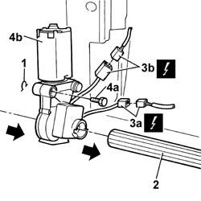

7045J34 Front seat backrest ANGLE adjustment MOTOR, left or right - R.R. after electric circuit check
- Path
- Procedures > 70 FITTINGS > 7045 FRONT SEATS > 7045J FRONT SEAT MOVEMENT > 7045J34 Front seat backrest ANGLE adjustment MOTOR, left or right - R.R. after electric circuit check
- Kind
- repair procedure (removal / refitting; the operation number is the code)
- Applies to
- all engines; all production periods
- Interactive page
- https://sloeber94.github.io/elrnDB-lThss/en/#/80586
Applies to: all engines; all production periods
 Removing
Removing
 Refitting
Refitting- Disconnect the negative battery terminal.
See in Op. 7045A10 FRONT SEAT (one) left or right - R.R.
See in Op. 7045J10 switch unit for movement of one front seat, l/h or r/h - r+r for check
See in Op. 7045A42 Front seat GUARD (one), left or right - R.R.
- < R1 > [all the elements]
See in Op. 7045A98 Front seat rear pouch panel, left or right - R.R.
1. Release the retaining spring.
2. Release the backrest movement control rod from the housing in the electric motor, motor side.
3. Disconnect the electrical connectors (3a) and (3b).
4. Undo the fixing bolt (4a) and remove the electric motor (4b) from the housing.

Applies to: all engines; all production periods
Refitting
Removing- Fit the electric motor in the housing and fasten it using the bolt.
- Connect the electrical connectors for the electric motor.
- Reposition the backrest movement control rod in the housing on the electric motor and secure it using the retaining spring.
See in Op. 7045A98 Front seat rear pouch panel, left or right - R.R.
See in Op. 7045A42 Front seat GUARD (one), left or right - R.R.
- < R1 > [all the elements]
See in Op. 7045J10 switch unit for movement of one front seat, l/h or r/h - r+r for check